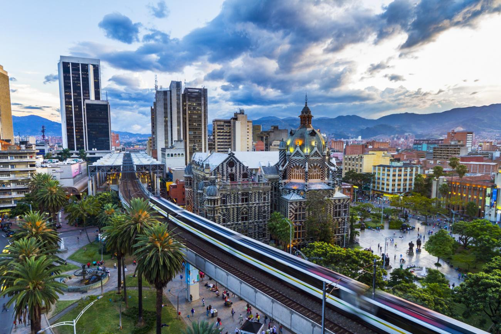
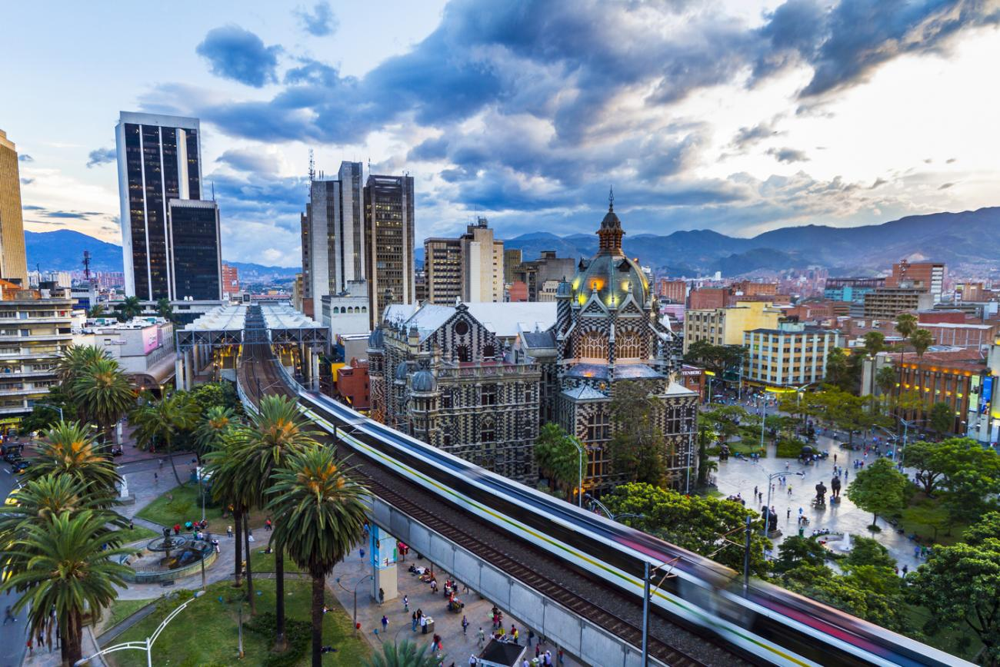

Historia de Medellin
Hacia los años 1500's aproximadamente el Valle de Aburrá era recorrido por tribus de cazadores y recolectores. Cuando llegaron los conquistadores españoles encontraron asentada una numerosa población nativa, que opuso poca resistencia. Eran aburraes, yamesíes, peques, ebéjicos, noriscos y maníes que estaban allí desde el siglo V a. C., según aproximaciones.
Tenían cultivos de maíz y fríjol, criaban curíes y perros mudos, tejían mantas de algodón, comerciaban con sal, y conocían la orfebrería. Bajo el dominio español fueron repartidos en encomiendas y desplazados de sus territorios. La deserción, el maltrato, las enfermedades y el duro trabajo intensivo en la tierra y las minas, en pocos años los diezmaron.